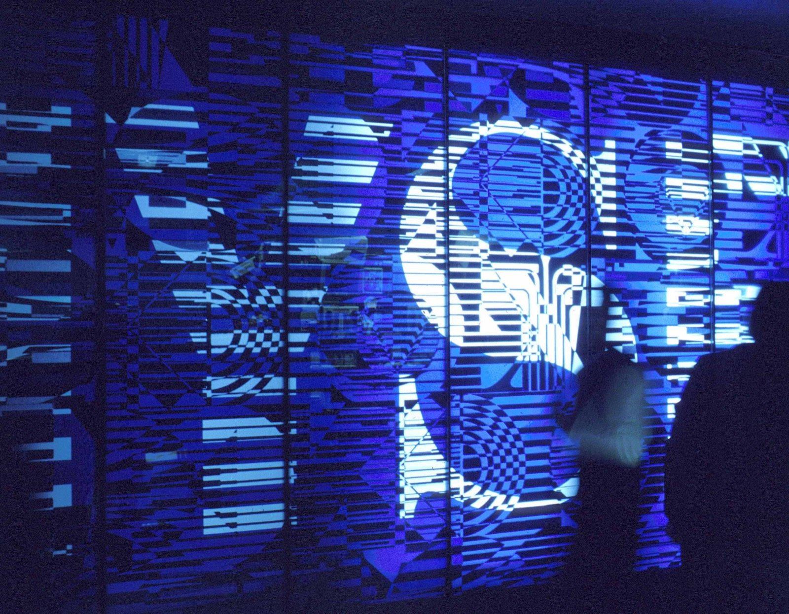

Perché conta: quando il Brent (il petrolio di riferimento europeo) supera i 100 dollari al barile, i prezzi alla pompa in tutta Europa salgono in settimane, le aziende manifatturiere e di trasporto vedono i costi aumentare, e la banca centrale americana — la Fed — ha un argomento in più per alzare i tassi invece di tagliarli. È quello che è successo mercoledì 9 settembre: il greggio è schizzato sopra quota 100 intraday dopo che le forze americane hanno affondato cinque petroliere dell'Iran nel Golfo di Oman.
Mercoledì 9 settembre 2026 Wall Street chiude per la terza seduta consecutiva al ribasso. Il Dow Jones Industrial Average perde −405 punti (−0,77%) fermandosi a 52.381. L'S&P 500 cede −0,48% a 7.636. Il Nasdaq Composite arretra −0,64% a 26.253. È la terza seduta negativa di fila: dall'inizio della settimana il Dow ha perso complessivamente quasi 800 punti.
Il motore del ribasso è l'escalation militare tra Stati Uniti e Iran nello Stretto di Hormuz. Gli Stati Uniti hanno affondato cinque petroliere legate ai Pasdaran (Guardia Rivoluzionaria Islamica iraniana) nel Golfo di Oman; l'Iran ha risposto attaccando dieci navi mercantili nella zona e colpendo una base americana in Giordania. Il Brent — il petrolio di riferimento europeo e globale — ha superato 100 dollari al barile per la prima volta dalla fine del 2023, prima di ritracciare leggermente verso chiusura.
I numeri della seduta
| Indice / Asset | Chiusura | Variazione giornaliera |
|---|---|---|
| Dow Jones | 52.381 | −405 punti (−0,77%) |
| S&P 500 | 7.636 | −0,48% |
| Nasdaq Composite | 26.253 | −0,64% |
| Brent crude (petrolio) | ~$100,73/barile | Massimo intraday; +7% in tre giorni |
| Oro | ~$4.390/oz | Calo dopo lo spike iniziale |
| Bitcoin | ~$79.000 | Stabile/lieve calo |
💡 Impara: Brent vs WTI — due benchmark del petrolio
Il prezzo del petrolio è spesso citato con due nomi diversi: Brent e WTI (West Texas Intermediate — greggio del Texas occidentale). Il Brent, estratto nel Mare del Nord, è il riferimento globale: copre circa il 65% dei contratti mondiali di greggio e determina i prezzi alla pompa in Europa e in buona parte dell'Asia. Il WTI, prodotto negli Stati Uniti, è il benchmark del mercato americano. Di norma il WTI vale 3-5 dollari meno del Brent. Quando si parla di petrolio "sopra i 100 dollari", è quasi sempre il Brent il primo a superare quella soglia psicologica.
Il Brent a 100 dollari: la soglia psicologica che spaventa i mercati
Il Brent sopra i 100 dollari è una soglia psicologica importante. L'ultima volta che il greggio europeo aveva toccato stabilmente quel livello era stato nel 2023, durante la fase di riduzione della produzione OPEC+. Adesso ci torna spinto da un motivo diverso: la disruption dell'offerta (interruzione dell'offerta) nel Golfo, non una scelta di politica produttiva.
Lo Stretto di Hormuz — il passaggio tra il Golfo Persico e il Mare Arabico attraverso cui transitano circa il 20% delle forniture globali di petrolio — è teatro di attacchi e blocchi da mesi. L'escalation di mercoledì, con la Marina americana che affonda cinque petroliere iraniane e Teheran che risponde colpendo dieci mercantili, porta il premio di rischio geopolitico incorporato nel prezzo del greggio ai massimi dalla crisi del 2023.
| Evento | Data | Impatto sul petrolio |
|---|---|---|
| USA affondano 5 petroliere IRGC | 9 settembre 2026 | Brent +7% in tre sedute |
| Iran attacca 10 navi mercantili | 9 settembre 2026 | Brent supera $100 intraday |
| Iran colpisce base USA in Giordania | 9 settembre 2026 | Escalation percepita come grave |
| Treasury yields (rendimenti a 10 anni USA) | 9 settembre 2026 | In rialzo: nuova pressione su Fed |
I Treasury yields salgono: la Fed alle strette
L'altro elemento che ha appesantito le borse americane è il rialzo dei rendimenti dei Treasury (titoli di Stato americani). I rendimenti dei Treasury a 10 anni — il tasso di interesse di riferimento per mutui, prestiti aziendali e valutazione delle azioni — sono saliti nella seduta, aggiungendo pressione ai mercati azionari. Quando i rendimenti salgono, le azioni diventano relativamente meno attraenti rispetto alle obbligazioni sicure.
La combinazione petrolio caro + rendimenti alti mette la Federal Reserve (banca centrale americana) in una posizione scomoda. Il presidente Kevin Warsh ha già indicato a Jackson Hole di voler riprendere il ciclo di rialzi. Con il Brent oltre i 100 dollari — che si traduce in inflazione più alta attraverso energia e trasporti — il margine per una pausa sui tassi si assottiglia ulteriormente. Il mercato prezza ora con alta probabilità un rialzo di 25 punti base nella riunione FOMC (Federal Open Market Committee) del 16-17 settembre.
💡 Impara: Treasury Yields (Rendimenti dei Titoli di Stato USA)
I Treasury sono i titoli di debito emessi dal governo americano. Il loro rendimento (yield) — cioè l'interesse annuo che pagano — si muove inversamente al loro prezzo: quando gli investitori vendono Treasury, il prezzo cala e il rendimento sale. Il rendimento del Treasury a 10 anni è il tasso di riferimento per gran parte del credito mondiale: se sale, diventano più cari i mutui, i prestiti auto, i finanziamenti aziendali. Per le azioni, rendimenti alti sui bond governativi sono un concorrente diretto: perché rischiare in borsa se un titolo "sicuro" paga già un interesse interessante?
Settori e titoli in evidenza
Sul fronte dei singoli titoli, nella seduta del 9 settembre hanno sofferto le aziende con alta esposizione ai costi energetici (compagnie aeree, trasporti) e quelle tech con valutazioni tirate che risentono di più del rialzo dei rendimenti. Le compagnie oil & gas americane — Exxon, Chevron, ConocoPhillips — hanno invece registrato performance positive, avvantaggiate dal rialzo del greggio.
Tra i titoli in rialzo spiccano i produttori di energia: la corsa del Brent sopra i 100 dollari gonfia i ricavi delle major petrolifere a ogni seduta. I titoli della difesa americana — Lockheed Martin, Northrop Grumman, Raytheon — sono rimasti relativamente stabili o in lieve rialzo, sostenuti dall'escalation nel Golfo che alimenta le attese di maggiori commesse militari.
📌 Cosa monitorare nei prossimi giorni
Il dato macro cruciale della settimana è il CPI americano di agosto (Consumer Price Index — indice dei prezzi al consumo), atteso per venerdì 11 settembre. Se il dato sull'inflazione confermasse la persistenza delle pressioni sui prezzi — già aggravate dal petrolio caro — la probabilità di rialzo dei tassi nella riunione Fed del 16-17 settembre diventerebbe quasi certa. Tenere sotto controllo anche l'evoluzione della crisi USA-Iran nello Stretto di Hormuz, che in questa fase è il principale driver del prezzo del greggio.
Alma Finanza · © 2026 · Contenuto a scopo informativo ed educativo. Non costituisce consulenza finanziaria né sollecitazione all'investimento. I dati riportati provengono da fonti pubbliche al momento della pubblicazione. Investire comporta rischi, inclusa la possibile perdita del capitale.
Nota metodologica: i valori degli indici si riferiscono alle chiusure ufficiali di borsa. Le variazioni percentuali sono calcolate sulla singola seduta di contrattazione.